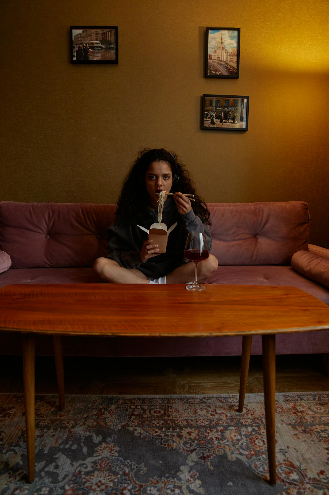

Hoofdhonger vs buikhonger na maagverkleining: wat is het verschil en wat doe je ermee?
Zo herken je of je lichaam eten nodig heeft of dat oude gewoontes en emoties aan het stuur staan.
Lees artikel →Wennen aan je nieuwe leven gaat niet alleen over eten. Hier vind je overzicht over hoofdhonger, emotie-eten, zelfbeeld, grenzen en sociale druk.
Deze hoofdpagina laat zien welke mentale thema's hieronder vallen. Kies direct een artikel als je een concrete vraag hebt, of gebruik dit overzicht eerst om te bepalen waar jij nu het meeste aan hebt.
Dit zijn de onderwerpen die onder deze hoofdpagina hangen. Elk blok linkt direct door naar het bijbehorende artikel.
Leren voelen of je lichaam eten nodig heeft of dat spanning, gewoonte of prikkels het stuur overnemen.
Lees artikel →Praktische noodroutes voor het moment zelf en een eerlijker kijk op patronen die niet door een kleinere maag verdwijnen.
Lees artikel →Wennen aan een ander lichaam kost tijd. Complimenten, spiegels en body image lopen niet altijd gelijk met je resultaten.
Lees artikel →Ja. Veel mensen merken dat oude coping, onzekerheid en sociale spanning niet automatisch verdwijnen als het gewicht daalt.
Als spanning rond eten, zelfbeeld of sociale situaties je dagelijks leven blijft bepalen, is extra begeleiding juist een sterke stap.
Ja. Het mentale stuk hoort bij herstel, maar verdient een eigen overzicht omdat de vragen en oplossingen vaak anders zijn dan bij fysieke klachten.
Dit zijn de verdiepende artikelen die onder deze hoofdpagina hangen. Begin bij het onderwerp dat nu het beste past.
Zo herken je of je lichaam eten nodig heeft of dat oude gewoontes en emoties aan het stuur staan.
Lees artikel →
Emotie-eten verdwijnt niet door een kleinere maag. Dit helpt om er anders mee om te gaan.
Lees artikel →Waarom positieve reacties van anderen niet altijd samenvallen met hoe jij jezelf ervaart.
Lees artikel →
Over sociale druk, nieuwe grenzen en hoe je jezelf niet hoeft uit te leggen aan iedereen.
Lees artikel →
Sociale druk en grenzen
Van etentjes tot bemoeizuchtige opmerkingen: duidelijke taal en eigen grenzen maken het leven een stuk lichter.
Lees artikel →